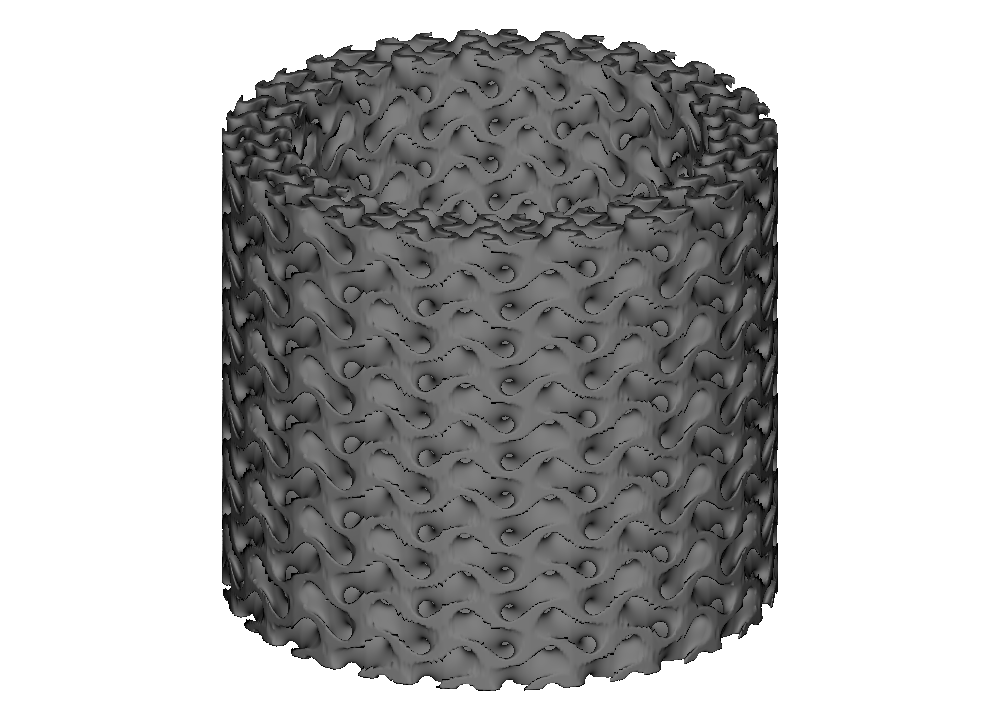
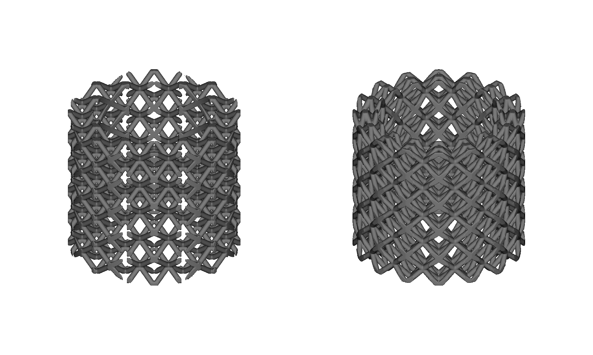
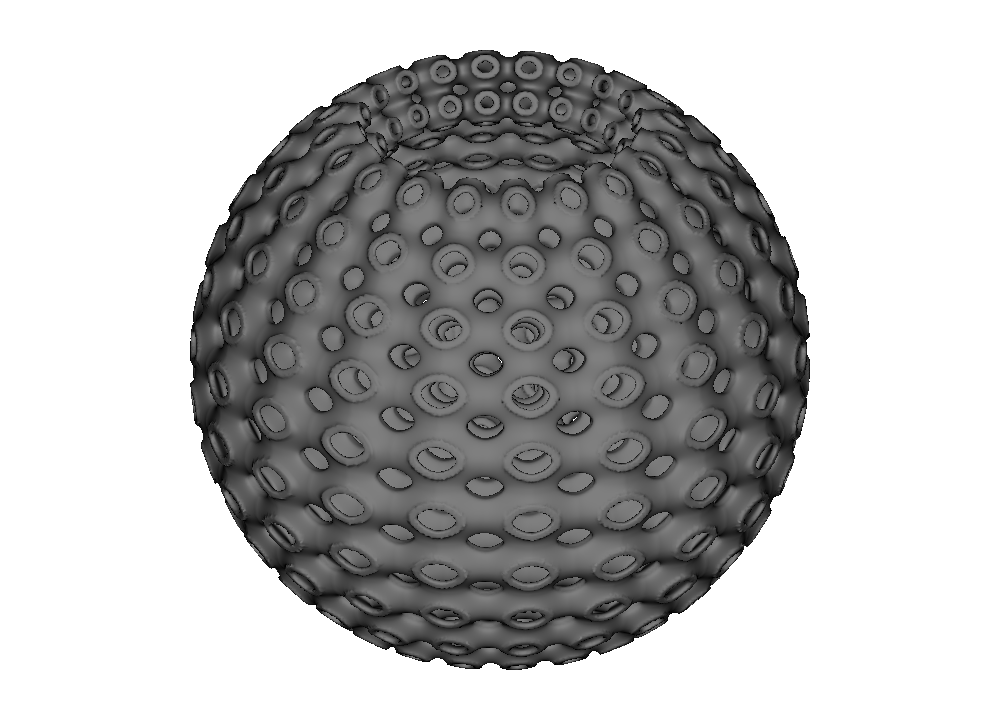
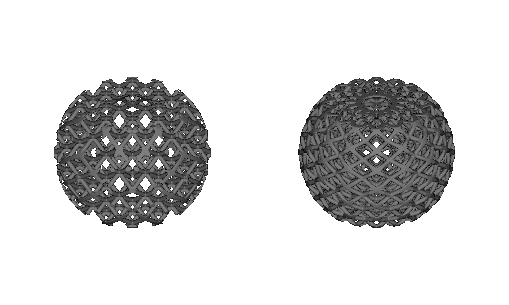

Cylindrical and spherical cell maps#
A cell map decides where repeated cells go. A unit cell decides what repeats. Keeping those jobs separate means the same gyroid, BCC beam cell, or custom cell can fill a rectangular block, wrap around a pipe, or follow a spherical shell without being rewritten.
This guide assumes you have completed Getting Started and Functional Grading. It uses ideal cylinders and spherical bands that OpenVCAD can construct directly, so CadQuery is not needed.
Why map shape matters#
A rectangular map lays out rows along Cartesian X, Y, and Z. A cylindrical map turns those rows into azimuth, axial position, and radial layers. A spherical map turns them into longitude, latitude, and radial layers.
The unit-cell recipe stays the same:
rectangular = mm.bcc(rectangular_map, beam_radius=0.55)
cylindrical = mm.bcc(cylindrical_map, beam_radius=0.55)
spherical = mm.bcc(spherical_map, beam_radius=0.55)
Only the map changes. This map-first workflow also works with TPMS, graph, and face or plate cells.
Wrap a gyroid around a pipe#
The first example makes a 6 mm thick pipe wall that is 42 mm tall. Its coordinate directions are:
U: around the circumference,
V: from the lower end to the upper end, and
W: from the inner radius to the outer radius.
import pyvcad as pv
import pyvcad_metamaterials as mm
import pyvcad_rendering as viz
pipe_center = pv.Vec3(0.0, 0.0, 0.0)
inner_radius = 18.0
outer_radius = 24.0
height = 42.0
cell_map = mm.cylindrical_cell_map(
center=pipe_center,
inner_radius=inner_radius,
outer_radius=outer_radius,
height=height,
arc_count=20,
axial_cell_size=7.0,
radial_cell_size=3.0,
axis=pv.Vec3(0.0, 0.0, 1.0),
reference_direction=pv.Vec3(1.0, 0.0, 0.0),
)
root = mm.gyroid(cell_map, wall_thickness=0.75)
viz.Render(root)
arc_count=20 places 20 repetitions around the pipe. The target sizes ask for
approximately 7 mm tall cells and 3 mm radial layers. OpenVCAD rounds those
targets up to whole cell counts while keeping the requested 18 mm and 24 mm
radii and 42 mm height exact.
axis points along V. reference_direction points from the pipe center toward
the U seam, where the circumferential count begins. Both directions can be
changed to place the same map in another frame.
{kind=link}

Run the complete example:
01_cylindrical_pipe.py.
For exact count control, replace the three sizing arguments with:
cells=(20, 6, 2) # circumferential, axial, radial
Use either cells or the complete sizing group, not both.
Rectangular or cylindrical?#
The next example uses one BCC beam cell and one annular pipe envelope twice. The left result starts with a rectangular map and clips away everything outside the pipe. The right result starts with a cylindrical map and clips against the same envelope.
{kind=link}

The cylindrical map is useful when circumferential continuity or bore-aligned rows matter. A rectangular map can still be the better choice when the part’s loading, manufacturing direction, or surrounding features follow Cartesian axes. The map is a design choice, not a universal quality ranking.
The full comparison is in
03_map_comparison.py.
Build a spherical protective shell#
A spherical map uses:
U: longitude around the shell,
V: latitude from south toward north, and
W: radial layers from the inner sphere to the outer sphere.
This example places a Schwarz-P cell through a 6 mm thick protective shell band:
import pyvcad as pv
import pyvcad_metamaterials as mm
import pyvcad_rendering as viz
shell_center = pv.Vec3(0.0, 0.0, 0.0)
inner_radius = 20.0
outer_radius = 26.0
cell_map = mm.spherical_cell_map(
center=shell_center,
inner_radius=inner_radius,
outer_radius=outer_radius,
latitude_bounds_degrees=(-62.0, 62.0),
longitude_count=20,
latitude_count=10,
radial_cell_size=3.0,
north_axis=pv.Vec3(0.0, 0.0, 1.0),
reference_direction=pv.Vec3(1.0, 0.0, 0.0),
)
root = mm.schwarz_p(cell_map, wall_thickness=0.65)
viz.Render(root)
The 20 longitude cells close around the shell. Ten latitude cells run through
the open band, and the 3 mm target makes two radial layers. north_axis
orients the latitude direction. reference_direction points toward the
zero-longitude seam after it is projected onto the equator.
{kind=link}

For exact count control, use:
cells=(20, 10, 2) # longitude, latitude, radial
Rectangular or spherical?#
The spherical comparison again uses the same BCC cell and the same clipped shell envelope on both sides.
{kind=link}

The spherical arrangement makes concentric and radial organization explicit. The rectangular arrangement keeps global X/Y/Z alignment. Both remain ordinary OpenVCAD geometry and can be intersected with holes, openings, ribs, and other part features.
Native map or surface map?#
Design surface |
Start with |
|---|---|
Ideal annular cylinder, cylindrical shell, or partial angular sector |
|
Ideal spherical shell or spherical band |
|
Selected imported or freeform CAD face |
|
Open triangle-mesh patch, or mixed mesh/CAD boundaries |
|
Two independently authored boundary surfaces |
|
Native maps give direct control over radii, height, counts, orientation, and seam direction. Surface maps are the right tool when the exact authored or scanned surface is the design intent.
A few practical checks#
Native maps default to curved cells. This preserves midpoint samples and gives a closer approximation to the requested analytic shape than one linear element per cell. Curved placement can stretch cells, especially when radial layers are thick; that is expected map behavior.
Keep inner radii greater than zero. Spherical latitude bounds must stay inside the poles, so use values strictly between -90° and 90°. A full 360° direction joins periodically; a partial sweep has two open angular boundaries.
Reusable custom cells keep the same responsibilities they have on rectangular maps: implicit functions should match across periodic boundaries, and graph cells should have matching boundary vertices and edges. Some plate cells repeat over more than one logical cell, so their circumferential or longitude count must be divisible by that repeat period.
Next steps#
Create your own topology in Custom unit cells.
Grade wall thickness, beam radius, or other controls in Functionally graded geometry.
Attach mapped scalar, vector, color, or material fields in Attribute modeling.
Follow selected CAD faces in Conformal mapping CAD surfaces.
Follow scanned or generated patches in Conformal mapping triangle meshes.